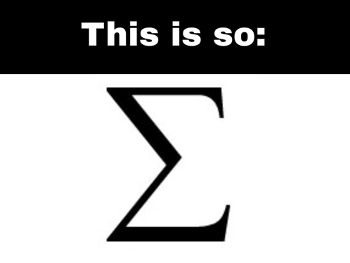

гиперссылка на что-то
я смешной текст к гифке
Типа подзаголовок
я смешной текст к гифке
Именно математика даёт надёжнейшие правила: тому кто им следует - тому не опасен обман чувств.
– Леонард Эйлер
СОЗДАНИЕ СИСТЕМЫ ОБОЗНАЧЕНИЙ В МАТЕМАТИКЕ
Одним из важнейших достижений Леонарда является систематизация теории функций. Именно его наработками сегодня пользуется весь мир, решая тригонометрические функции. Его авторству принадлежит символ «е», служащий для образования логарифмов и известный в настоящее время, как «число Эйлера». Он придумал использовать греческую букву «Σ» для подведения итоговой суммы и символ «i», определяющий мнимую единицу.
ГЕОМЕТРИЯ
Исследуя элементарную геометрию, Эйлер сделал несколько открытий, касаемых треугольников, не обнаруженных древнегреческим математиком Евклидом. В 1760-м он опубликовал масштабную работу «Исследования о кривизне поверхностей», где рассчитал формулу связи главной кривизны и кривизны сечения поверхности. Еще через 10 лет ученый издал труд «О телах, поверхность которых можно развернуть на плоскость».ТЕОРИЯ ЧИСЕЛ
Эйлер блестяще доказал тождество Ньютона, малую теорему Ферма и его же теорему о сумме двух квадратов. Кроме того, им была усовершенствована теорема о сумме 4-х квадратов француза Лагранжа. Леонард стал автором дополнений к теории совершенных чисел, так волновавшую ученых тех лет.НАУКА О ЗВЕЗДАХ И ФИЗИКА
Эйлер разобрался с «пучком Эйлера-Бернулли», дав возможность инженерам использовать это решение в своих вычислениях. Вклад в развитие астрономии принес ученому множество высоких наград, учрежденных парижской научной академией. Он предоставил ряд точных расчетов такого явления, как параллакс Солнца, и что не менее важно – максимально точно рассчитал орбиты небесных тел. На основе вычислений Леонарда была составлена таблица координат планет, комет и других небесных объектов.| 1 | 63 | 62 | 4 | 5 | 59 | 58 | 8 |
| 56 | 10 | 11 | 53 | 52 | 14 | 15 | 49 |
| 48 | 18 | 19 | 45 | 44 | 22 | 23 | 41 |
| 25 | 39 | 38 | 28 | 29 | 35 | 34 | 32 |
| 33 | 31 | 30 | 36 | 37 | 27 | 26 | 40 |
| 24 | 42 | 43 | 21 | 20 | 46 | 47 | 17 |
| 16 | 50 | 51 | 13 | 12 | 54 | 55 | 9 |
| 57 | 7 | 6 | 60 | 61 | 3 | 2 | 64 |
МАГИЧЕСКИЙ КВАДРАТ ЭЙЛЕРА (Сумма чисел по строкам и столбцам равна 260)
Магические квадраты, такие как латинские квадраты, представляют собой числовые конструкции, которые содержат все числа натурального ряда один раз в каждой строке, столбце и на каждой диагонале. Леонард Эйлер, известный математик XVIII века, исследовал методы построения таких квадратов и их свойства. Его работы вдохновили множество других исследователей и продолжают интересовать людей по всему миру.Важнейшие открытия
| Достижение | Год | Описание |
|---|---|---|
| Формула Эйлера | 1714 | Формула связывает комплексную экспоненту с тригонометрическими функциями. Была названа в честь Эйлера потому что он её вывел. Геометрическая интерпретация формулы появилась позже, у К. Весселя. |
| Монография «Введение в анализ бесконечно малых» | 1748 | Фундаментальный, хорошо иллюстрированный примерами курс, с продуманной терминологией и символикой. «Можно с уверенностью сказать, что добрая половина того, что преподаётся теперь в курсах высшей алгебры и высшего анализа, находится в трудах Эйлера» |
| «Дифференциальное исчисление» | 1755 | |
| Три тома «Интегрального исчисления» | 1768-1770 |
Список источников